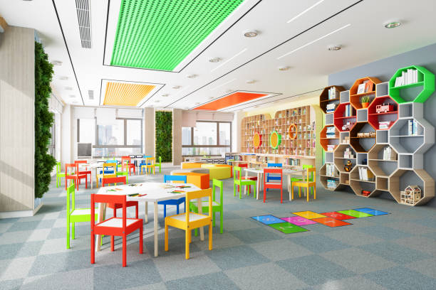

Willkommen beim Kinderhort!
Unser Kinderhort ist ein liebevoller Ort, an dem Kinder im Alter von 3 bis 10 Jahren spielen, lernen und wachsen können. Seit 2004 bieten wir eine sichere und anregende Umgebung für Kinder, in der sie sich entfalten und ihre individuellen Talente entdecken können. Unser engagiertes Team besteht aus erfahrenen Betreuern, die sich leidenschaftlich um das Wohlergehen und die Entwicklung jedes einzelnen Kindes kümmern. Wir bieten ein abwechslungsreiches Programm an Aktivitäten, das von kreativem Basteln über sportliche Spiele bis hin zu Lernunterstützung reicht. Bei uns steht die Freude und das Wohlbefinden der Kinder an erster Stelle. Wir legen großen Wert auf eine warmherzige Atmosphäre, in der sich jedes Kind willkommen und geliebt fühlt. Unser Ziel ist es, den Kindern eine positive und bereichernde Erfahrung zu bieten, die sie auf ihrem Weg zu selbstbewussten und einfallsreichen Individuen unterstützt. Wir laden Sie herzlich ein, unseren Kinderhort kennenzulernen und Teil unserer liebevollen Gemeinschaft zu werden!
Unser Team
.jpeg)

.jpeg)